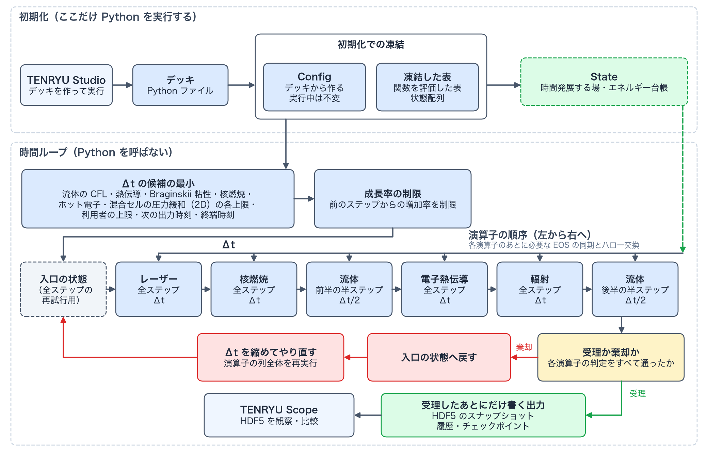

アーキテクチャとモジュール地図 reference
TENRYU は、デッキ（deck）を初期化時に純粋なデータへ凍結（freeze）し、GPU 上の共有された状態を、責務の明確な物理モジュール（physics module）が更新する CUDA 専用のコードである。連成ドライバ（coupling driver）が、演算子の順序（operator ordering）、時間刻み、再試行、演算子のあいだの熱力学的な再クロージャ（re-closure）を一元的に管理し、その HDF5 出力を TENRYU Studio と TENRYU Scope が利用する。
設計原則とビルドの境界
設計の第一原則は、GPU を第一に考えることである。流体、流束制限拡散（flux-limited diffusion、FLD）と離散座標法（discrete ordinates、SN）による輻射、レーザーの光線追跡（ray tracing）といった主要な計算を NVIDIA の GPU 上で実行し、CUDA 以外のバックエンドは公式の対象としない。大域的な MPI（Message Passing Interface）通信を抑えるための局所性（locality）、流体・輻射・レーザー・材料・メッシュ・連成・診断・入出力・ドライバのあいだの固定された依存の向き、そして同じ GPU・同じ構成に対する再現性（reproducibility）を、性能と同じ重みの要求として設計に課す。将来の 3D や追加の物理が、既存の境界を崩さずに入れられることも原則のひとつである。
計算のコアは C++20 と CUDA C++ で実装し、CMake (3.27 以上) と Ninja で構成する。基盤となる依存には、CUDA Toolkit 12.x (12.0 以上)、MPI 3.1 以上、HDF5 1.12 以上、Python 3.10 以上と pybind11 2.11 以上が含まれる — ビルドのページが表にしているものと同じ要件一式である。Python は、Smilei 形式の namelist で書かれたデッキを読み取るために埋め込んでいる環境であり、設定の生成が終わると関連するリソースを解放する。MPI は分散実行を担い、HDF5 の出力はランク（rank）0 が書く。物理モジュールは、モジュールのあいだで取り決めた入力と出力（引数のデータ構造と、呼び出しの前後で成り立つ条件）だけを介してやり取りし、互いの内部表現に直接依存することはない。

src/coupling/driver.cpp）の呼び出しの順（レーザー、核燃焼、流体の前半、電子熱伝導、輻射、流体の後半）をそのまま描いた。赤の矢印と赤の箱は棄却したときの再試行、緑の箱と矢印は受理したあとにだけ書く出力である。モジュール地図
モジュール（module）は src/ 直下のディレクトリ 1 つで、データの所有権と依存の向きを分ける単位である。この分割は、単なるディレクトリの整理ではなく、仕様である。1 つの物理演算子とその頁を指す物理カーネル（physical kernel）とは別の語で、1 つのモジュールに複数の物理カーネルが入ることもある。次の表は、概要として押さえておきたい主要な境界を示す。熱伝導は独立した演算子として進むが、実装上は hydro/ に置かれ、時系列上どこで呼ぶかは coupling/ が所有する。
| モジュール | 責務 |
|---|---|
core/ | 設定、デッキの凍結、単位、エラー処理、性能計測（profiling）、共通のデバイス配列や作業領域など、全体が使う基盤を提供する。 |
mesh/ | ラグランジュ（Lagrangian）/ ALE（arbitrary Lagrangian–Eulerian、任意ラグランジュ・オイラー法）の計算格子、軸対称（RZ）の幾何量、近傍・面・節点の接続、そしてメッシュ品質の許容性（admissibility）の判定を所有する。 |
hydro/ | 運動量、位置、密度、イオン・電子の内部エネルギー、境界条件を更新し、電子・イオンの熱伝導（thermal conduction）も実装する。 |
radiation/ | 1D / 2D の多群（multigroup）の FLD と SN、輻射の源、物質との交換、境界での集計を提供する。 |
laser/ | 屈折を含む光線追跡、逆制動輻射（inverse bremsstrahlung）による吸収、流体メッシュへの保存的な沈着（deposition）を担当する。 |
materials/ | 状態から状態方程式（equation of state、EOS）、不透明度（opacity）、伝導率（conductivity）、緩和時間（relaxation time）、平均電離度（mean ionization）などの物性係数を返す。 |
burn/ | Bosch–Hale の反応率、セルごとの核種の反応網（reaction network）、生成物によるエネルギーの沈着と核種の収支を進める。 |
coupling/ | 演算子分割（operator splitting）、時間刻みの選択、源の注入、EOS の再クロージャ（演算子が温度やエネルギーを変えるたびに EOS を評価し直し、熱力学量を整合させ直す操作 — 数値基盤参照）、全ステップの再試行と、ステップの受理の判定を所有する。 |
diagnostics/ | エネルギー収支、面密度（areal density）、球対称性、シェルの追跡といった ICF（inertial confinement fusion、慣性核融合）向けの観測量と、安全性の監査を構成し、履歴の書き出しを担う。 |
parallel/ | MPI の領域分割（domain decomposition）、ハロー（halo。隣のランクが所有するセルのコピーを置く袖領域）の交換、全ランクにわたる縮約（reduction。時間刻みの最小値など）を提供する。 |
verification/ | 検証と試験が使う解析解と基準値（Noh、Sedov、Marshak、レーザー）、および監査の集計を提供する。 |
io/ | 出力ディレクトリと出力時刻の管理、HDF5 のスナップショットとチェックポイントの書き出しと読み込み（再開を含む）を担う。 |
drivers/ | run / verify の入口として、設定、メッシュ、状態、各コールバックを組み立て、実行のライフサイクルを開始する。 |
Config、State、連成ドライバ
デッキ（.py）は、CPython と pybind11 を介してビルダ（Builder）へ渡される。ビルダは型、必須の値、単位、範囲、場のあいだの不変条件を検証し、既定値を適用する。幾何を与える関数はメッシュ座標上の状態配列へ、レーザーの波形や時間に依存する境界温度は FrozenTable1D へ、それぞれ一括して評価される。実行した元のスクリプトと、純粋なデータに変換した凍結後の JSON は HDF5 に保存できるため、結果がどの入力から作られたのかを後から追跡できる。
Config は、この解析結果を保持するホスト側の中心的な構造体で、各モジュールの init() へ const 参照として渡される。GPU へは必要な場だけをコピーする。これに対し State は、メッシュ座標、密度、速度、2 温度（two-temperature）の内部エネルギー、圧力、輻射場、沈着量、エネルギー台帳など、ステップとともに変化する量を所有する。この分離により、「何を実行するか」と「いまどこまで進んだか」を混同せずに済む。
連成ドライバは物理カーネルの寄せ集めではなく、時間発展の所有者である。時間刻みは、流体の CFL（Courant–Friedrichs–Lewy）条件、熱伝導、Braginskii 粘性（Braginskii viscosity）、核燃焼（nuclear burn）、ホット電子（hot electron）、混合セル（mixed cell）の圧力緩和（pressure relaxation。2D）の各上限と、利用者が指定する上限、次の出力時刻と終端時刻による制限のうち最小の値とし、前のステップからの増加率も制限する（輻射とレーザーは上限を提案しない。詳しくは時間刻み制御と CFL）。続いて、レーザーの全ステップ、核燃焼の全ステップ、流体の半ステップ、熱伝導の全ステップ、輻射の全ステップ、流体の半ステップを順に呼び、各演算子のあとに必要な EOS の同期とハロー交換を挿入する。全ステップの再試行を有効にした構成では、ステップ入口の状態をスナップショットとして保存し、流体の修正段、核燃焼、輻射、熱伝導のいずれかがステップを受理しなければ復元して、時間刻みを縮めて演算子分割の列全体をやり直す（縮める幅と回数の上限は時間刻み制御と CFLに述べる）。履歴、スナップショット、チェックポイント、累積のエネルギー集計は、ステップが受理されたあとにだけ書くので、棄却された試行が正式な出力になることはない。
デバイスメモリの作法
時間発展する大きな場は、ホスト側コンテナの延長としては扱わず、型付きの DeviceArray<T> や次元ごとの場のラッパ（wrapper）が、所有権・ムーブ・再初期化を明示する。一時的な作業領域は、プロセスの生存期間にわたって確保される、確保した大きさを縮めない（grow-only）タグ付きの作業領域プール（scratch pool）から取得し（device_scratch_acquire(tag, bytes)）、演算子ごとの用途を一意なタグで分離する。プールは、cudaMalloc と同じく、取得した領域の内容を 0 で埋めない。0 での初期化が必要な CUDA カーネルは、明示的に初期化する。プールから取った領域のデストラクタは個別に解放せず、終了時にまとめて解放する。この規約により、ステップの内側で確保と解放を繰り返すことを避けつつ、同時に生存する領域が別名で参照されることや、暗黙の初期値に依存することを防げる。短命のバッファは、ストリーム順序つきのメモリプール（cudaMallocAsync と cudaFreeAsync を使う device_pool_malloc）から取り、確保と解放がデバイスの同期を伴わないようにしている。
2 つのデスクトップアプリ
TENRYU Studio — デッキを作り、実行する
TENRYU Studio は、Tauri 2 と React / TypeScript によるフォーム形式のデッキ用 GUI（graphical user interface）である。材料、メッシュ、レーザー、輻射、数値解法、出力を画面から構成し、編集の状態を埋め込んだ Python のデッキをその場で生成して、行き来しながら編集できる。生成したデッキの検証、ローカルのファイル管理、システムの ssh / scp を介した設定済みサーバへの投入と実行状況の確認までを扱う。Studio はソルバの内部状態を別の形式で持つのではなく、CLI が受け付けるのと同じ、単一のデッキを生成する。
TENRYU Scope — 結果を見て、調べて、比べる
TENRYU Scope は、HDF5 のスナップショットと履歴を観察することに特化した姉妹アプリである。ローカルのファイル、または Studio と共有するサーバのプロファイルから実行結果を開き、1D の分布、時系列、2D のテンソル格子や CSR (compressed sparse row 接続) のマルチブロックメッシュ上の場を描画する。2D の場のカラーマップ、線形・対数のレンジ、拡大縮小と平行移動、時刻のスクラブとアニメーション、ラインアウト（lineout）、レーザー光線の重ね描き、PNG / CSV / 動画の書き出しを備える。Studio による軽量な結果確認を置き換えるのではなく、大きな場の探索と、実行どうしの比較へ責務を分けている。